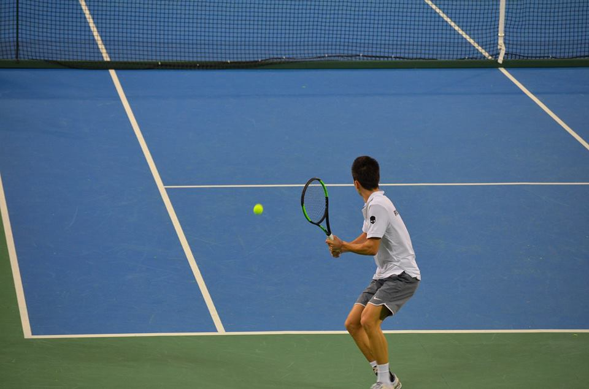

Edris Fetisleam
Edris Fetisleam a început tenisul la clubul LPS-CSS Constanța la vârstă de 6 ani cu antrenorul Dorin Ochiuleț,
cu care a continuat până la 14 ani, reușind împreună cu acesta să creeze o relație unică jucător-antrenor cu rezultate remarcabile. Din motive ale antrenorului,la 10 ani Edris s-a mutat la CS Știință Constanța, continuând antrenamentele cu antrenorul lui la acest club.
A ajuns multiplu campion național la simplu și la dublu la aproape toate categoriile de vârstă, a câștigat turnee internaționale
și a participat la cele mai mari turnee dedicate juniorilor din Europa.

La vârstă de 14 ani a plecat la Tenis Club Idu unde s-a antrenat cu Damian Petcu timp de 4 ani, reușind până la vârstă de 18 ani numeroase
obiective alături de club. A ajuns din nou campion național la simplu, a câștigat mai multe titluri în circuitul ITF Juniors. S-a mutat la București pentru a-și creste nivelul de joc cu antrenorii cunoscuți în domeniu din capitală și
a făcut pasul mare spre tenisul profesionist câștigând 2 turnee ITF în Turcia cu premii totale de 15.000$.
Astfel, în câteva săptămâni a urcat mult în clasamentul mondial, până pe poziția 673 ATP. Rezultatele bune i-au adus și o convocare la echipa ce reprezenta România la Cupa Davis și a debutat cu victorie în întâlnirea din 2018 cu Tunisia.
